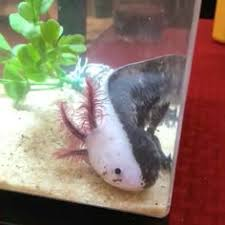
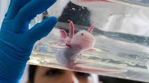

Os estudos científicos sobre o axolote (Ambystoma mexicanum) revolucionam a medicina regenerativa e a biologia genética devido à capacidade única desse anfíbio de reconstituir tecidos complexos sem deixar cicatrizes. Pesquisadores do mundo todo investigam como esse animal consegue reativar programas celulares idênticos aos do desenvolvimento embrionário humano
Biologia regenerativa:Análise de como as células lembram sua localização no corpo durante a reconstrução de um membro e como enzimas e genes específicos se combinam com o ácido retinoico para promover o crescimento correto
Prevenção de Cicatrizes: O estudo de como o axolote não forma tecido cicatricial (que é o que bloqueia a regeneração em humanos)

Medicina Regenerativa e CicatrizaçãoAusência de fibrose: Ao contrário dos mamíferos que formam cicatrizes para fechar feridas, o axolote reorganiza as células locais para iniciar um crescimento real de tecido.Estruturas complexas: Estudos provam que eles regeneram ossos, músculos, vasos sanguíneos e nervos perfeitamente funcionais.Mapeamento posicional: Cientistas da Northeastern University descobriram que o ácido retinoico atua como um "GPS químico". A concentração desse ácido avisa as células se elas devem reconstruir a ponta de um dedo ou um braço inteiro.
Aplicações Clínicas:Pesquisas exploram o uso do modelo do axolote no tratamento de doenças neurodegenerativas e em estudos sobre o câncer